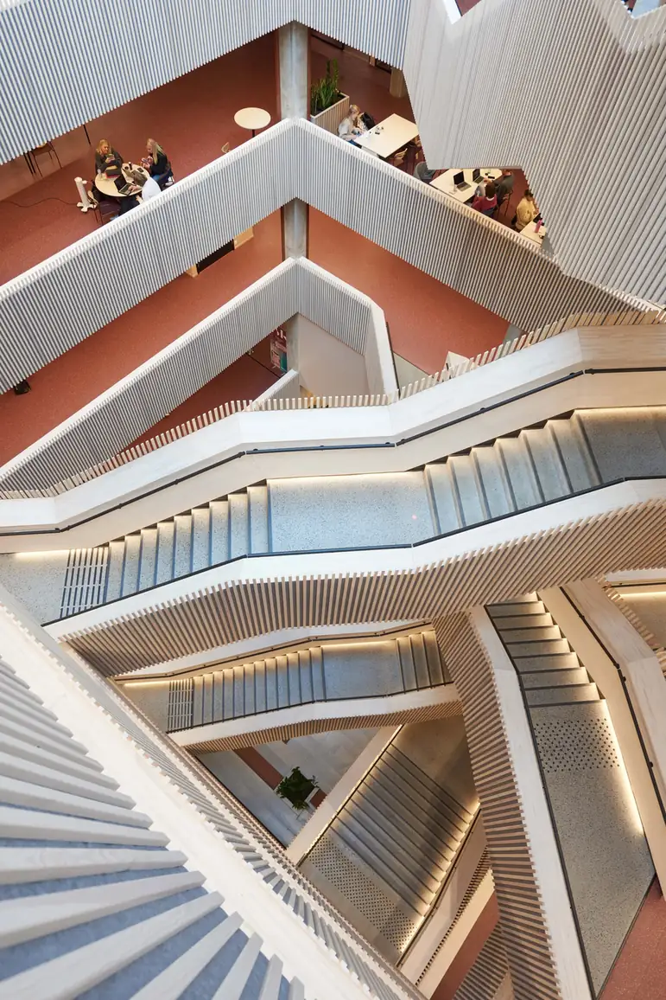

Arbeidsform
Prosess fra første skisse
Vi setter oss inn i oppdraget, tegner og prøver ut – og følger arbeidet gjennom fasene.
- Avklaring og behov.
- Skisse og utprøving.
- Prosjektering.

Etikk
Etiske retningslinjer
A-lab har egne etiske retningslinjer for praksisen. Vi viser til dem i oppdrag og samarbeid.
| Faglighet | Arbeidet skal holde faglig mål. |
|---|---|
| Åpenhet | Vi er tydelige om hva vi kan bidra med. |
| Ansvarlighet | Vi tar ansvar for egne leveranser. |
Publikasjoner
Fag og formidling
Vi publiserer fagtekster og formidler arbeidene våre.
Fagtekster
Tekster om arkitektur og praksis.
Formidling
Prosjekter presentert for et bredere publikum.
Portefølje
Arbeidene samlet i porteføljen.
Vil dere samarbeide?
Ta kontakt for en samtale om oppdraget.